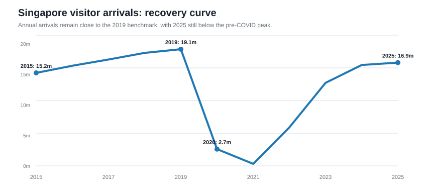
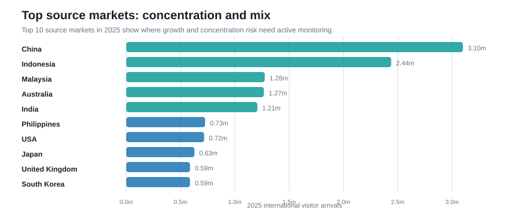
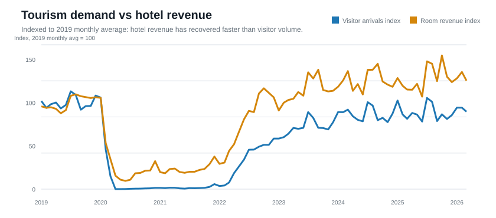
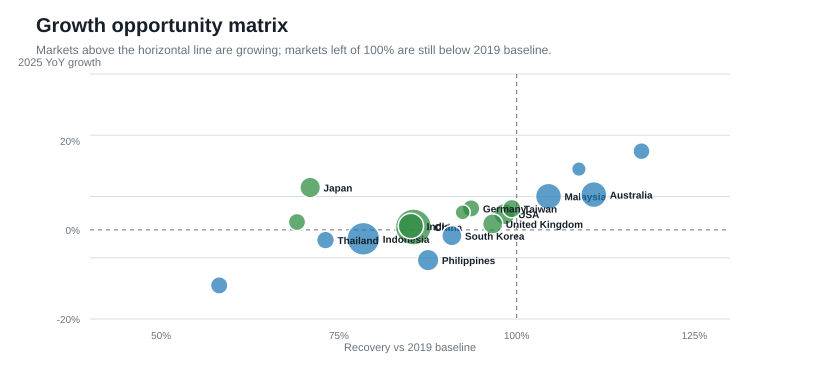
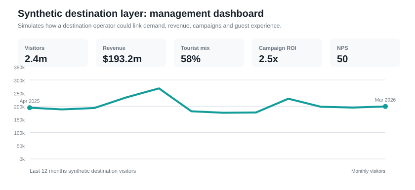
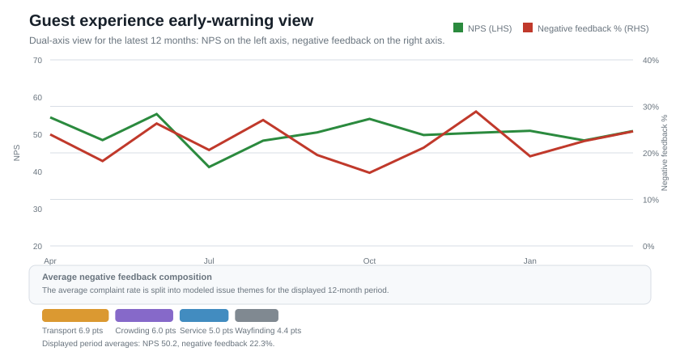

Portfolio Case Study
Destination Performance & Tourism Growth Dashboard
This showcase combines official Singapore tourism and hotel datasets with a transparent synthetic destination operating layer to simulate how a destination operator can monitor visitorship, revenue, guest experience and campaign performance.
Executive Narrative for SDC
- Singapore recorded 16.9m international visitor arrivals in 2025, reaching 88% of the 2019 baseline.
- Jan-Mar 2026 arrivals reached 94% of the same 2019 period, suggesting demand has broadly normalized but remains uneven by market.
- The top five 2025 source markets account for 55% of arrivals, making source-market concentration an important management lens.
- Hotel room revenue in 2025 reached 128% of 2019, indicating yield recovery has outpaced pure visitor-volume recovery.
- Opportunity screening highlights Japan, Germany, Taiwan as markets worth deeper campaign and partnership review.
- The synthetic destination layer shows how management could connect public demand signals to revenue per visitor, campaign ROI and guest experience monitoring.
Step 1: Public Tourism Demand
Monthly visitor arrivals are used as the core demand signal. For SDC, this identifies which visitor source markets may matter most for partnership strategy, campaign localization and destination programming.


Step 2: Tourism Benchmarking
Hotel room revenue, average room rate and occupancy provide a business-quality proxy: not just whether visitor volumes are back, but whether demand is translating into yield. This is useful for SDC because destination management should optimize for visitor value, not footfall alone.


Step 3: Synthetic Destination Layer
The destination layer is synthetic by design, because attraction-level revenue, guest satisfaction and campaign ROI are not public. It creates a realistic management view that links public tourism demand to simulated destination operations.


SDC Action Table
| Management action | Evidence from analysis | How SDC could use it | Metric to monitor |
|---|---|---|---|
| Prioritize market-specific activation | China, Indonesia, Malaysia, Australia and India account for the largest share of arrivals. | Build source-market views for campaign planning, language localization, travel-trade partnerships and visitor-mix monitoring. | Visitors by source market, campaign ROI, revenue per visitor |
| Separate volume recovery from value recovery | Hotel room revenue has recovered faster than visitor arrivals. | Track whether destination visitors are converting into higher-yield attraction, F&B, retail and event spend rather than only measuring footfall. | Revenue per visitor, average spend, business-unit revenue mix |
| Use recovery gaps as a growth pipeline | Japan, Germany and Taiwan show positive growth but remain below the 2019 baseline. | Test tactical campaigns, airline/travel-agent partnerships and event bundles for under-recovered but improving markets. | Recovery vs 2019, YoY growth, campaign bookings |
| Protect experience during peak demand | Synthetic guest-experience modeling links high visitorship to crowding and transport complaint pressure. | Pair demand forecasts with transport nudges, crowd-level dashboards, staffing plans and peak-period communication. | NPS, negative feedback %, crowding/transport complaints |
Data Sources
- International Visitor Arrivals by Place of Residence, Monthly
d_d1c33009b674dcf70b8e8c790b793f28 - Monthly Hotel Statistics
d_8e62605f0c1c948702b6ea0fe45242d3 - Tourism Receipts by Major Components (Year-to-Date), Quarterly
d_248d4c6574b5ac87cd31851ed3f697d6
Transparency note: Singapore tourism demand and hotel benchmarks are official public datasets. Destination revenue, campaign ROI, guest feedback and local-versus-tourist destination behavior are synthetic and used only to demonstrate analytical approach.